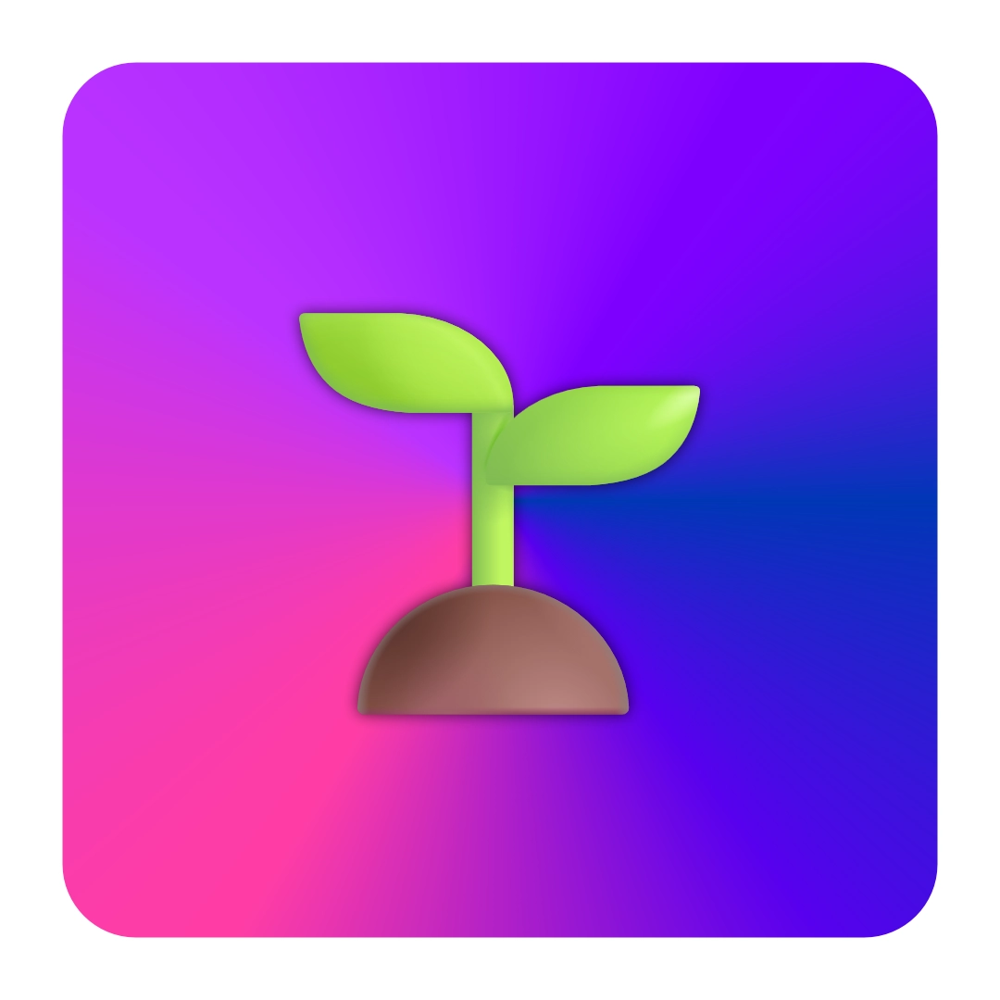

GitHub Spec Kit / Spec-Driven Development
從 Vibe Coding 到規格驅動開發
Spec Kit 是 GitHub 開源的 SDD 工具包：先把需求變成可執行規格，再生成計畫、任務與實作。
Spec-firstAI Coding AgentExecutable SpecsOpenClaw 顧問流程

Spec Kit LogoSpec Kit 是 GitHub 開源的 SDD 工具包：先把需求變成可執行規格，再生成計畫、任務與實作。

Spec Kit LogoSpec-Driven Development 的核心反轉：不是規格服務程式碼，而是程式碼服務規格。
過去規格常被寫完就丟；Spec Kit 把規格變成主要產物，讓 AI 依規格生成計畫、任務、測試與實作。
建立專案原則、品質標準與開發約束。
描述要做什麼、為什麼，不先談技術。
把需求轉成技術架構與實作計畫。
拆成可執行任務與安全平行工作。
依規格與任務實作並驗證。
官方建議用 uv 從 GitHub 安裝；初始化專案後，AI coding agent 會取得 `/speckit.*` 指令。Codex skills 模式則會以 `$speckit-*` 方式使用。
官方提醒：PyPI 上同名套件不代表官方維護；正式安裝應以 GitHub repository 為來源。
skills-based integration，安裝到 `.agents/skills`，以 `$speckit-
透過 specify init 建立對應 commands、context rules 與目錄結構。
可用 generic integration 指定 commands dir，給未列入的 agent 使用。
可先用 Codex/opencode/generic 方式接入，再包成文文自己的 SOP。
規格先定義使用者、場景、需求與驗收，不讓 AI 一開始就跳進技術細節。
模板要求標記不確定處、補充 acceptance criteria 與可測量成功條件。
規格與計畫成為版本化主產物，程式碼是規格的實作表達。
tasks 與 checklist 讓每個需求能對應任務、測試與交付標準。
建議不是立刻全面導入，而是把 Spec Kit 變成「AI 顧問技術步驟」中的規格化開發模組。
整理客戶需求、資料邊界與商業目標。
spec.md、plan.md、tasks.md、checklist。
sub-agent 分工、測試、備份、GitHub Pages 交付。
先確認角色、場景、痛點、資料來源、權限與不可做事項。
把需求寫成可驗收 spec，模糊處標記需確認。
選 LINE、Telegram、Google Drive、GitHub Pages、資料庫等架構。
拆 task、實作、驗證、備份 B21、交付連結。
門診問答、初診分流、衛教、預約提醒、評論邀請。
把文件、SOP、客服問答變成可查詢與可維護規格。
網站/文件 → 規格 → 圖文簡報 → GitHub Pages 發布。
把企業需求診斷、帳號準備、資料權限、交付物標準化。
規格、驗收、任務拆解、企業約束、多人/多 agent 分工。
還沒確認需求就安裝一堆 extension，或把客戶機密資料丟進不受控工具。
Spec Kit 很強，但第三方 extensions / presets 需要審查。醫療、法務、投資場景只做流程輔助與資訊整理，不能替代專業判斷。
正式客戶案建議先在本機或私有 repo 試跑，避免外洩客戶資料。
AI 顧問規格模板：背景、角色、需求、風險、驗收。
建議用診所 AI 助理或 HTML PPT 產生器先跑。
用 Spec Kit 方法產出完整開發文件。
sub-agent 實作、測試、發佈、B21 備份與交付。
Spec Kit 可以成為文文的「企業 AI 導入規格引擎」：先規格，後實作；先驗收，後交付；先治理，後自動化。
我建議把它納入 Jason 的 AI 顧問技術步驟，先做成繁中模板與試點流程，再評估是否安裝 CLI 與建立 OpenClaw skill/preset。
資料來源：github/spec-kit README、spec-driven.md、installation.md、integrations.md、CLI reference；整理設計：文文。
每份簡報底部都有五個固定按鍵。按鍵會顯示「符號 + 中文小字」，手機與桌面都可以直接點選。
回到前一張投影片。
前往下一張投影片。
打開全部投影片目錄。
顯示本頁重點摘要。
切換沉浸/專注模式。